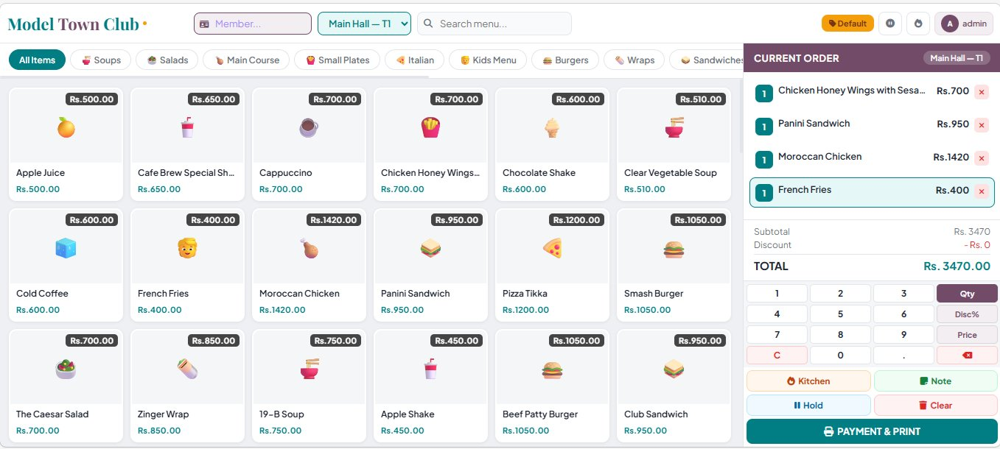
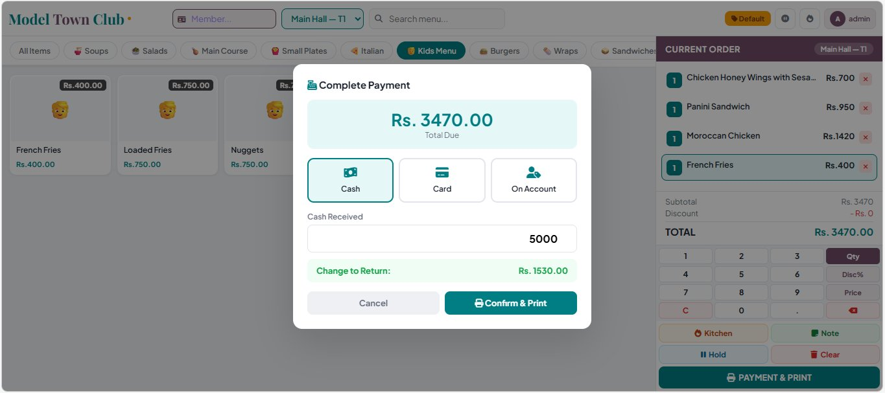
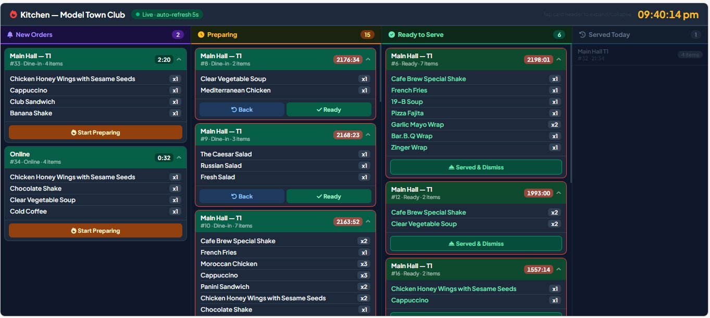

Problem
A members’ café needs orders from three places — the counter, the tables and members’ own phones — to reach the kitchen reliably, be billed correctly and print a receipt, all on the club’s existing tablets and PCs.
Users
Cashiers and waiters on the floor, kitchen staff, club administrators, and members on their own phones.
My role
I designed, built and deployed the system and support it in use: the menu and order model, the touch screens for the counter and kitchen, member access and receipt printing.
Implemented features
- Counter POS: menu by category with search, table selection, member lookup, quantity, discount and price keys, notes, hold and clear.
- Payment: cash, card or member account, with change calculated, then a printed receipt.
- Kitchen display: orders move through New, Preparing and Ready to serve, with a timer on each ticket and a five-second auto-refresh.
- Member portal: members sign in with their membership number, order from their phone and follow the status of their orders.
- Printing: receipts formatted for 80 mm thermal printers.
- Admin: menu, tables and staff managed from the app’s own screens.
Architecture decisions
- A Django monolith with plain JavaScript for the touch screens: no front-end framework to maintain, and it runs well on the club’s existing tablets and PCs.
- Polling instead of websockets for the kitchen display, which refreshes every five seconds: nothing extra to run on the server.
- One order record from table to receipt, so the floor, kitchen and counter always see the same state.
Security and data handling
- Separate sign-in for administrators, waiters and members.
- The live system holds real member data, so its address and logins are not published. The demo video and screenshots below use no member names.
Screenshots



Evidence
The screenshots and demo video above. Source code is private because the system runs a real club; a walkthrough is available on request.
← Back to all projects